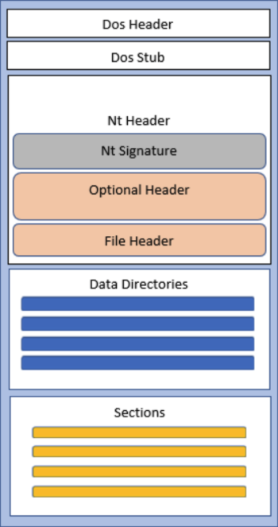

Parsing x64 PE File
Introduction
In this section, we will explore how to parse a 64-bit Windows Portable Executable (PE) file using the C programming language. The goal is to understand the internal structure of a PE file, including its DOS header, PE signature, and file header, as well as extract key metadata such as the number of sections and important flags. Parsing PE files is a fundamental skill in reverse engineering, malware analysis, and software debugging, as it allows us to inspect executables at a low level and understand how they are structured in memory.
PE Structure
The figure below shows the structure of a Portable Executable. 
DOS Header (IMAGE_DOS_HEADER)
The first two bytes of the file specifically, the first two bytes of the DOS header, are generally 0x4D and 0x5A, which correspond to the characters MZ. These bytes identifies the file as a valid executable and they are called Magic number.